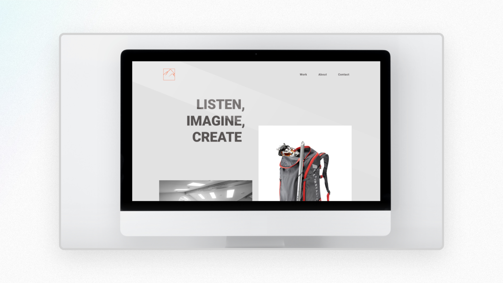
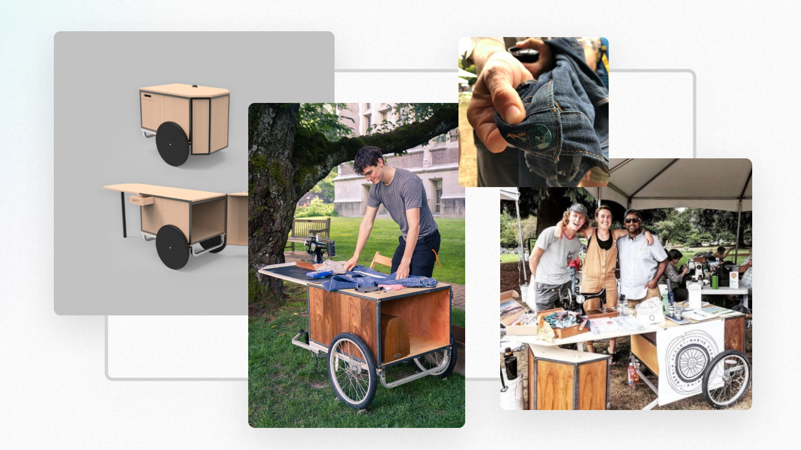

Stories from My Design Practice
Enjoy some teasers and case-studies for some of the design work I have had a hand in delivering. Reach out if you would like to hear more dduy123ker@gmail.com

Creating Expert Level Data Tools
(preview only)
This journey began with research sessions with sustainability experts and scientists. From that foundation we developed Data-Download tools to help practitioners assemble data in seconds instead of months. We kept our solution modular and extensable so it could keep up with the ever expanding needs of our expert practitioners.

Building a Design System Zero-to-One (preview only)
We were a very small team and used a "land-and-expand" strategy which lead to more efficiency and consistency where it mattered most. It also made handoff between design & developers easier for our growing teams. ("land and expand" is a term learned recently from Patric Morgans newsletter that captures what our process well)
Industrial Alechemy Website
A small outdoor gear design studio had neglected their digital presence and needed a new website to start a new chapter.
Passion project doing clothing repair around the city from a bike trailer in 2019.
Portfolio
Link available by request. Reach out at dduy123ker@gmail.com